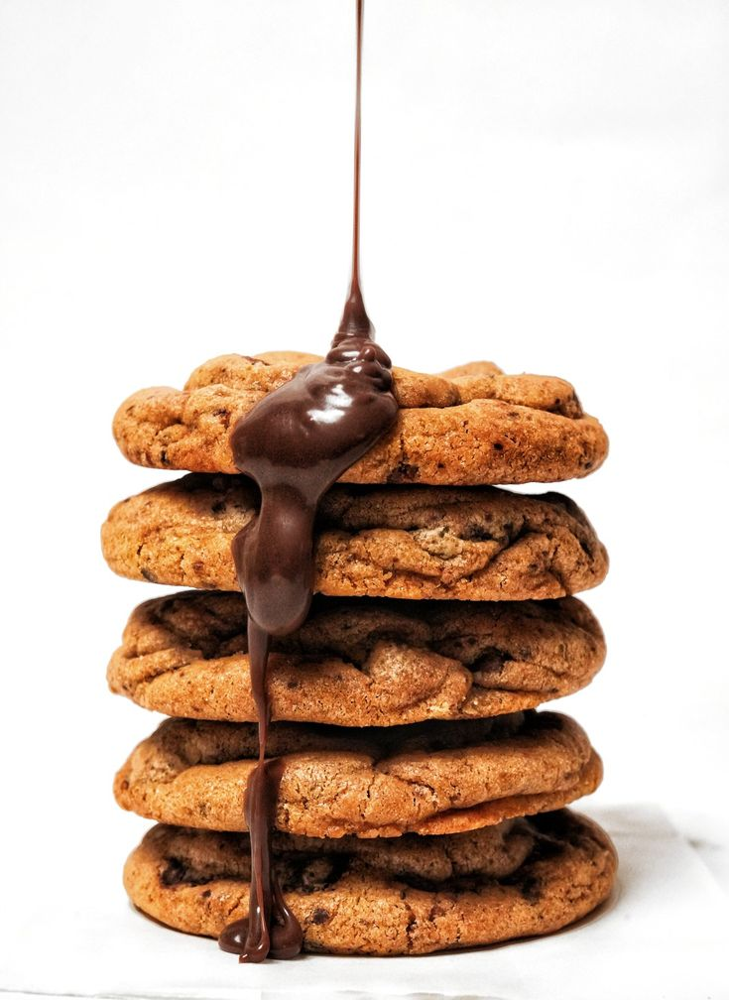

Our Story
Crumb studio was inspired by the evolution of cooking methods from practical cooking methods in the 7th century Persia.
We as a baking company became a family to grow our business together.
Minele Mabn is the CEO of Crumb Studio. He created the name in 2018 and took his precious time creating these unique cookie names
and baking them to ensure customers get what they expect from value of truth and taste.
He created the name in 2018 and took his precious time creating these unique cookie names and baking them to ensure customers get what
they expect from value of truth and taste.
Minele Mabn started working with his family members in the kitchen by mixing random ingredients together to bake their own authentic cookies.
From baking in their family kitchen to owning more than 20 bakeries in South Africa,
what a big accomplish this Bakery has made for their team. In 2021, Blue-ribbon donated over two hundred thousand rands for Crumb Studio
and that is already where their success has started.
Our Partners
- Blue-ribbon
- Yummy Peanut Butter
- Be Sweet
